A couple years ago Facebook was facing a challenge with their social network. When you're asking for information about friends or their friends' friends, the current query options for the database in the market couldn't support. So anytime you go further than four or five levels deep in your neetwork, Facebook couldn't support it. This is why they created GraphQL.
GraphQL is a query language for any kind of API and it is able to fulfill any queries across multiple databases .
The main benefits of using it is that you can ask for exactly what you want , and you get those results and nothing else .
GraphQL allows to describe what type of data you can expect .
We have to go to the folder and then execute " npm init " (We can let all the default options). After this the file package.json will be created .
Now we need to install the dependecies of the package.json file. We will install them with the command " npm install --save "
We also want to install express and nodemon . For that we use the command " npm install --save express nodemon "
Now we want to install the dev dependencies : npm install --save-dev babel-cli babel-preset-env babel-preset-stage-0
Once we have those packages installed, let's click on the package.json file, and we'll insert a script when we start our server. "start" : "nodemon ./index.js --exec babel-node" -e js
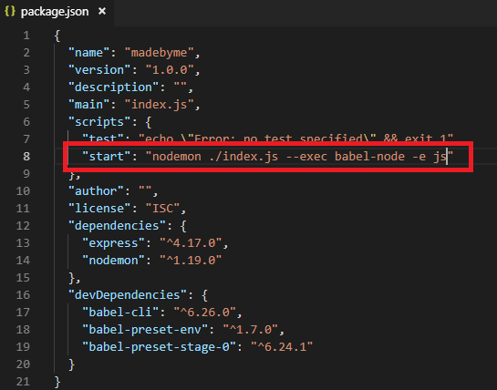Now we have to create a new file called " .babelrc " . This file will contains just one javascript object which have all the settings for babel . So basically those two presets will allow us to run ES6 code in our server. It wil precompile the code into Javascript code that the browser or any Javascript compiler can read .
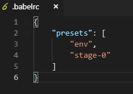Let's create another file called " index.js "
// import express import express from 'express'; // Create the app and run express const app = express(); // *** Create the base server *** // When calling this url '/' we are going to give a particular response app.get('/', (req, res) => { res.send('GraphQL is amazing'); }); // Listen in the port 8080. When the server starts it shows a log message to represents // that the server is running on localhost:8080/graphql app.listen(8080, () => console.log('Running server on port localhost:8080/graphql'));
Start the server with the command: " npm start " . This will start our script called "start" declared in the package.json file.
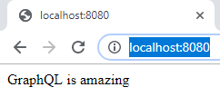Now that we have our server set up, let's add GraphQL to it (it is important to point out that the name's folder that contains our project shouldn't be name as 'GraphQL' because it will refuse to install the dependencies if the folder is name 'GraphQL').
We're going to create a new file and we'll call this file ' schema.js '. This is going to be our first schema , in this file what I want you to do is basically import 'buildSchema' from graphQL .
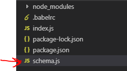// import 'buildSchema' from graphql import { buildSchema } from 'graphql'; // Create an object which is called schema, and we'll use the function buildSchema that we just imported, // and then use template strings and basically start our schema. // The first thing we want to do is a query, so the type is call Query, and that query is expecting a // a property called hello, which is a string. const schema = buildSchema(` type Query{ hello : String } `) // export the default schema export default schema;
We need to import some new dependencies and the file schema that we've just created , and for that we're going to the ' index.js ' file and import:
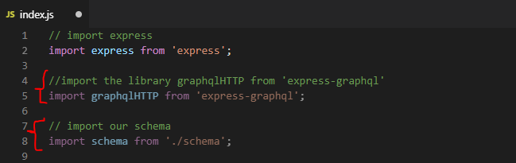We add a new path for ' /graphql ':
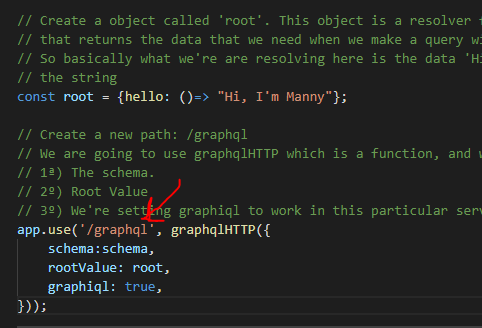In this part in " app.use (/graphql)" we are telling which resolver (to retrieve data) and which schema (our schema.js) want to use when we do this query.
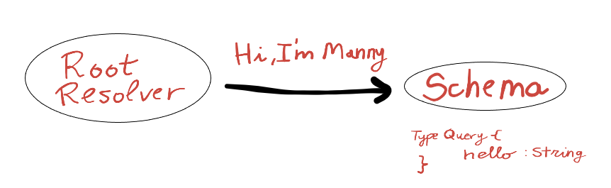To make this project work we need to install 2 more dependencies : " npm install --save express-graphql graphql "
Now we can start the server : "npm start". And we can go to the path ' localhost:8080/graphql ' . And we can see our GraphQL server running.
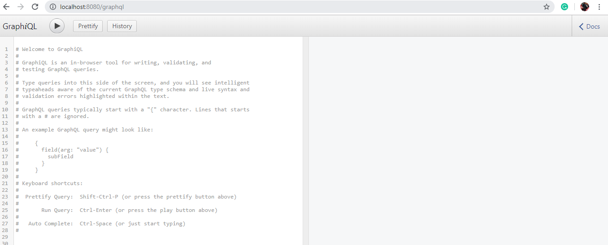Now we click in "Docs" to see the schema :
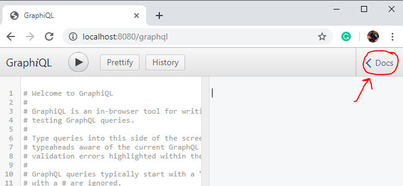 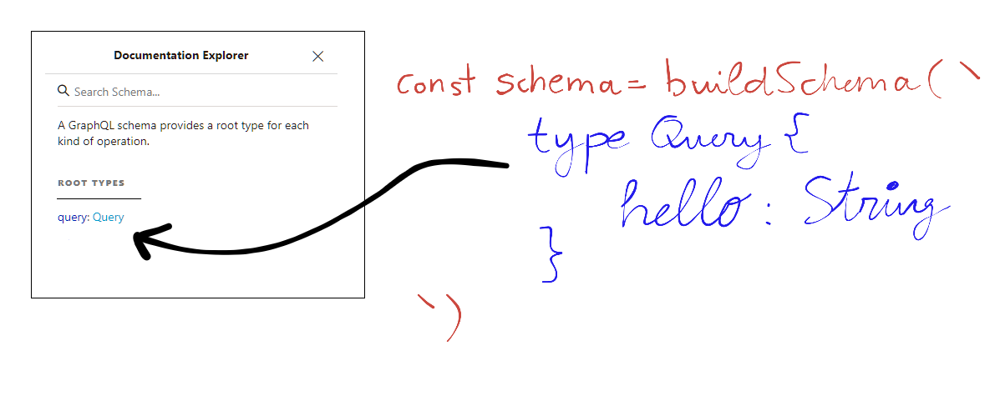So if we do the query our resolver will return the data:
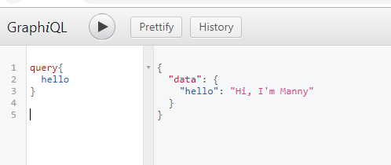To be able to make a graphQL query we need to define a schema which defines the query type and resolver for each api input. So the type definition provides what type of data we expect and the resolver gets the data for us.
Let's create a query that return a type of data 'Friend' :
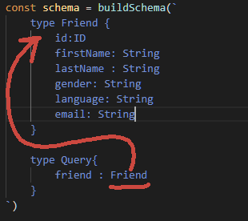Now we have to go to the index.js and change the resolver . Because right now we're resolving hello so if we were to do the query with friend and returning a Friend then this wouldn't work. It would actually trow us an error because the type doesn't match the resolver.
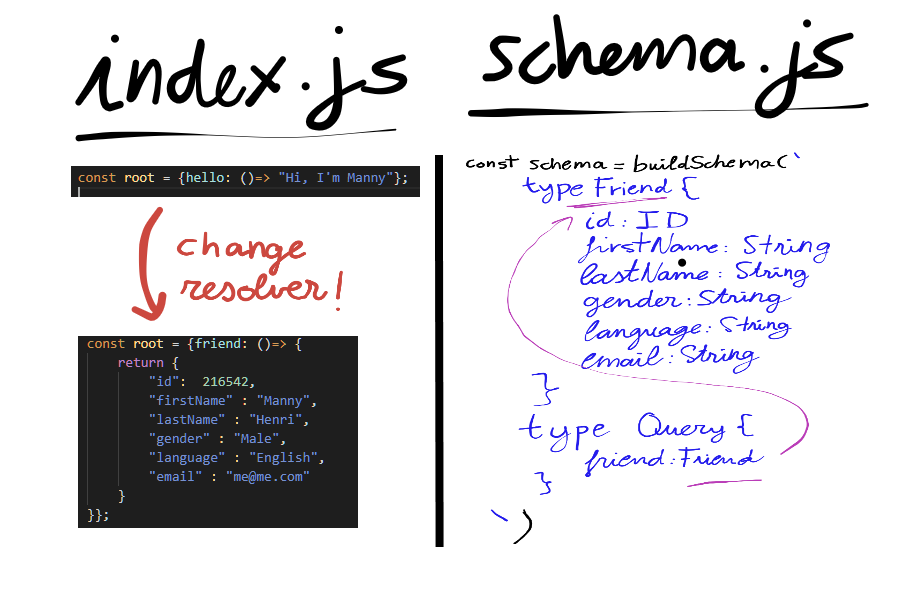Now we can query what kind of data I want to return from the friend, for example we can only get the id, first name, and last name:
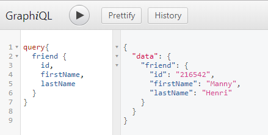Let's say that we want to have multiple emails for the email field. What we would do is create a new type called email and then make sure that this one is an array of email . And if you put an exclamation point , that means that this is a mandatory . If we don't have any exclamation point that means that this particular field can be left empty when we first create it.
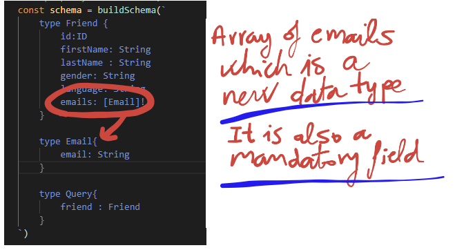Now we have to change the resolver so we can accept multiple emails. Otherwise it's not going to work. We are going to return an array of emails , so we will return an array of objects , each one with a property called "email" which is a string .
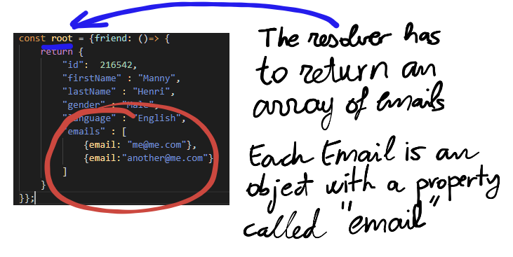Now if we query friends, we are going to get an array of emails:
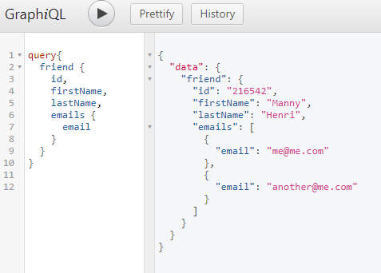